Proposition de refonte — 2026
Un fast-food de Vaulx-en-Velin que 50 000 personnes suivent sur TikTok, mais un site qui ressemblait à tous les autres. Ma proposition : un site qui donne faim avant même d'avoir commandé.
- Restaurant
- Anas Food, Vaulx-en-Velin
- Année
- 2026
- Rôle
- Direction artistique, UX, UI, développement
- Outils
- HTML, CSS, JavaScript, Canvas
- Statut
- Proposition de refonte
- Prototype
- Voir en ligne ↗

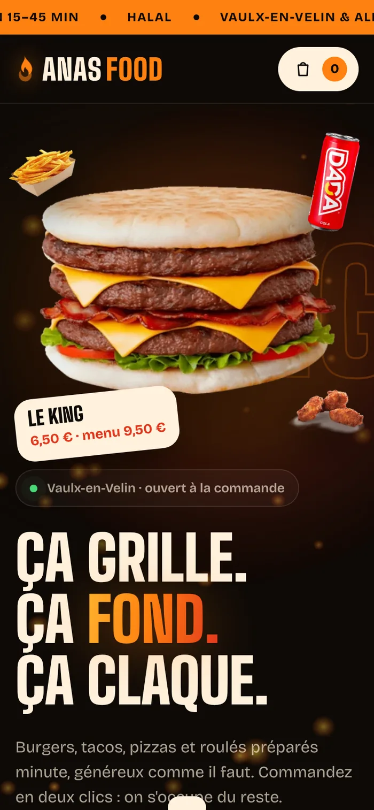
✦Proposition de refonte : Anas Food est un vrai restaurant, mais ce site n'est pas son site officiel. La carte, les prix et les zones de livraison reprennent ceux du site actuel (novembre 2026), tout comme les visuels des produits.
Un site qui ne donnait pas faim.
Le site actuel fait le travail : on y commande. Mais c'est un modèle générique de plateforme de commande, le même que des centaines d'autres snacks. Rien ne dit qui est Anas Food, ni pourquoi on devrait commander ici plutôt qu'ailleurs.
Pourtant, l'énergie est là : 50 000 abonnés et un million de j'aime sur TikTok. Le défi : faire du site le prolongement de cette énergie, et transformer l'envie en commande.
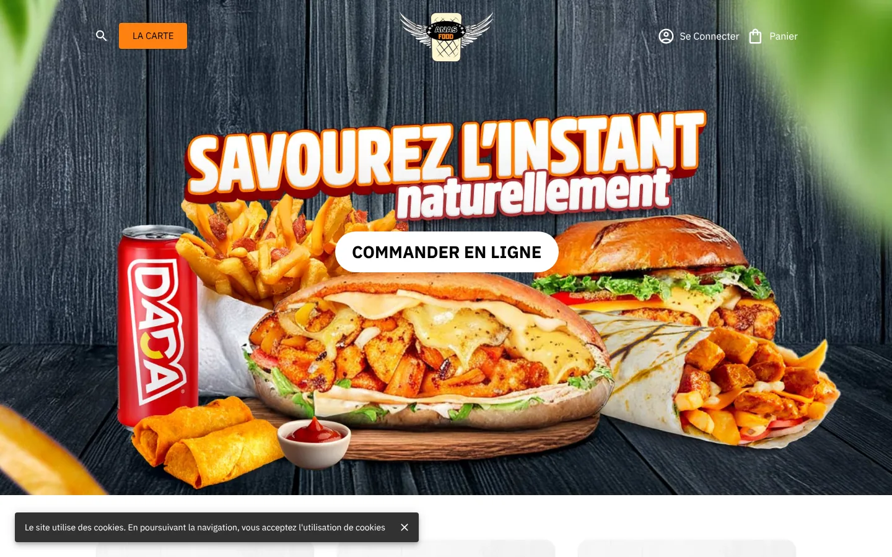
Le feu, la nuit, la gourmandise.
J'ai gardé l'orange de la marque pour la continuité, et je l'ai poussé vers le feu : fond charbon, braises animées, touches de piment. Une typographie très condensée et très grasse pour l'appétit et l'énergie, une grotesque chaleureuse pour la lisibilité de la carte.
Ça grille. Ça fond.
Big Shoulders Display
Tacos Le Anas — 9 €
Bricolage Grotesque
Faire vivre la carte.
Les signatures de la maison (Tacos Le Anas, Le King, Pizza Anas, Maxi Roulé, frites bowl) défilent à l'horizontale au fil du scroll : chaque plat a sa couleur, sa scène, son prix.
Le bloc « Quelle faim avez-vous ce soir ? » propose quatre combos composés à partir de la vraie carte, du petit creux au match entre potes, avec le total calculé et l'ajout au panier en un clic.
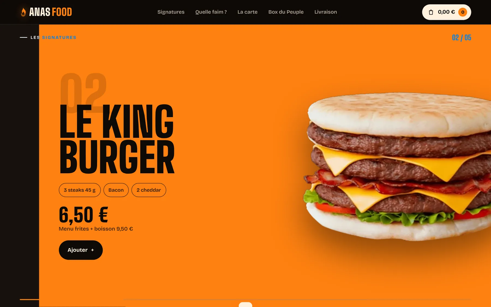
Signatures — scroll horizontal
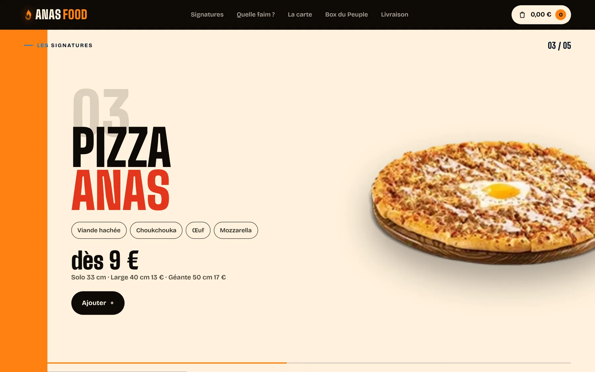
Chaque plat a sa couleur
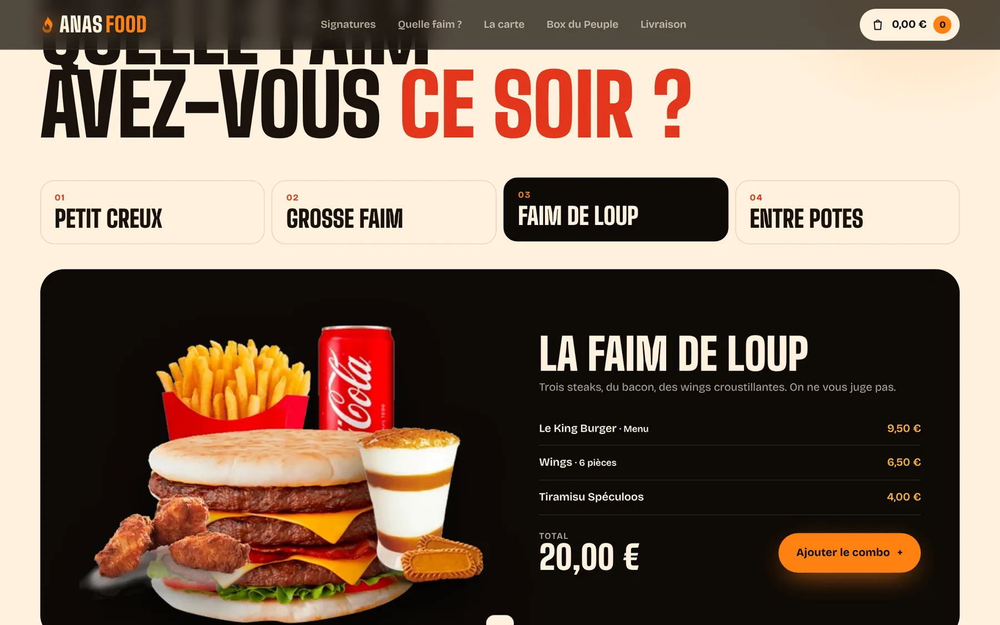
Du coup de faim à la commande.
Toute la carte est là : 103 produits en 13 catégories, avec une recherche instantanée (« chèvre », « saumon »…). Taille de pizza, seul ou en menu : le prix se met à jour, et l'image passe au menu avec frites et boisson.
Le panier calcule les frais et le minimum de commande selon la ville de livraison, parmi les dix zones desservies, et affiche ce qu'il manque pour être livré. Plus de mauvaise surprise au moment de payer.
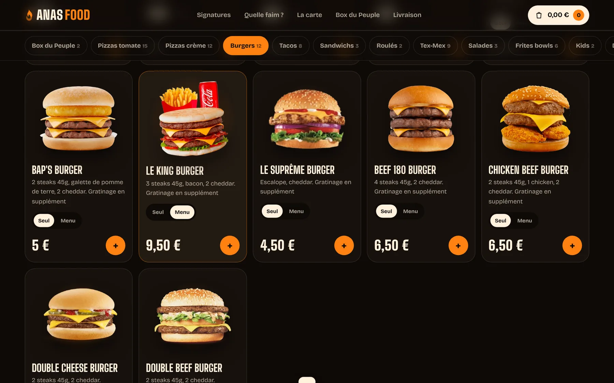
La carte — formats seul ou menu
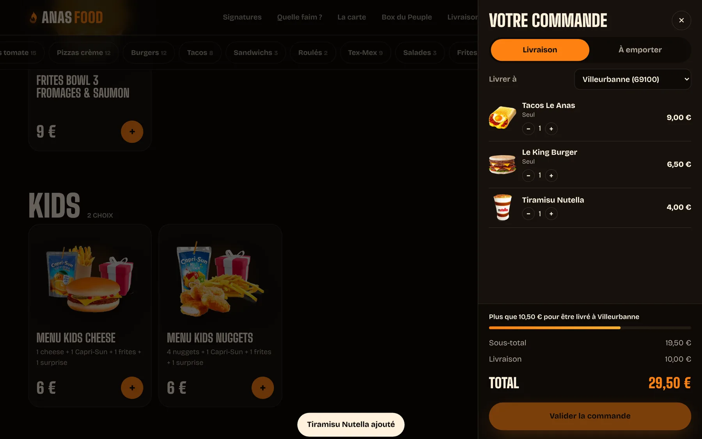
Panier — frais et minimum par ville
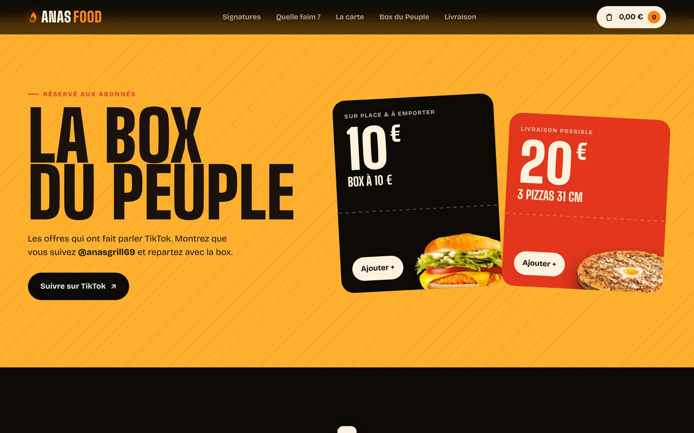
La Box du Peuple — offres abonnés
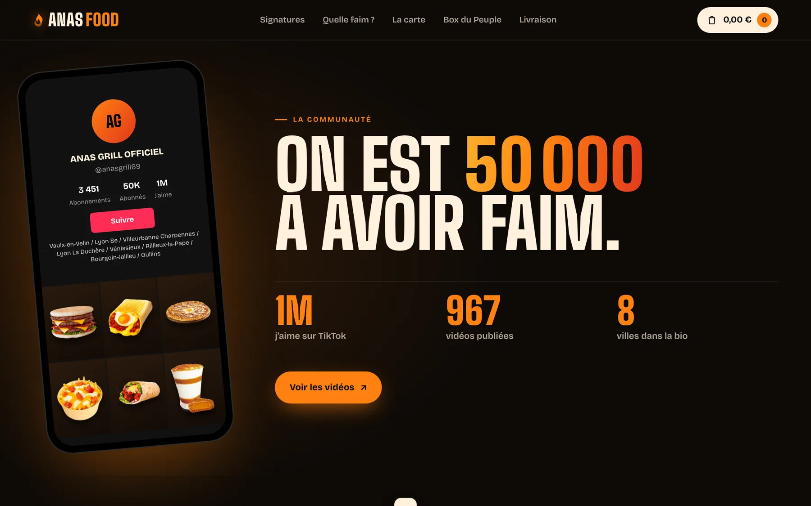
La communauté TikTok
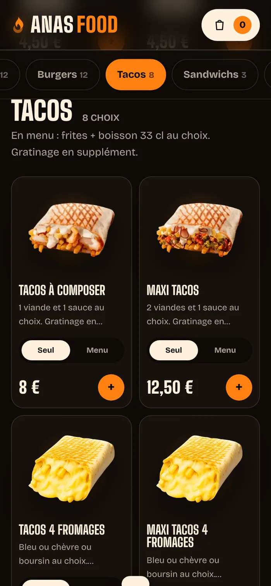
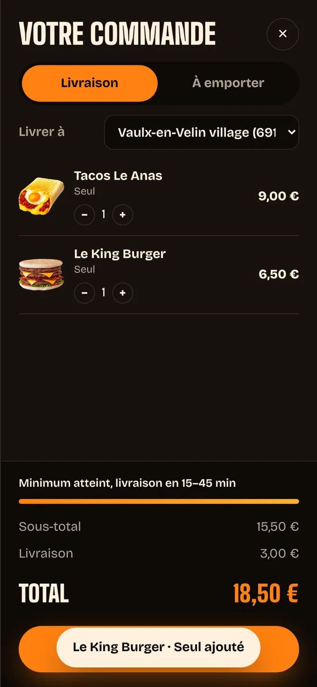
Pensé pour donner faim.
Produits vivants
Slider des best-sellers, plats qui flottent et réagissent à la souris, braises dessinées en canvas.
Signatures
Un défilement horizontal où chaque plat devient une affiche, avec son prix et l'ajout direct au panier.
Quelle faim ?
Quatre combos calculés sur la vraie carte, pour décider en trois secondes.
Carte & recherche
103 produits, tailles et menus, recherche instantanée, catégories qui suivent le défilement.
Panier malin
Frais, minimum et délai selon la ville, barre de progression « plus que X € ».
Communauté
La Box du Peuple et les chiffres TikTok pour transformer les abonnés en clients.
Maison Sable
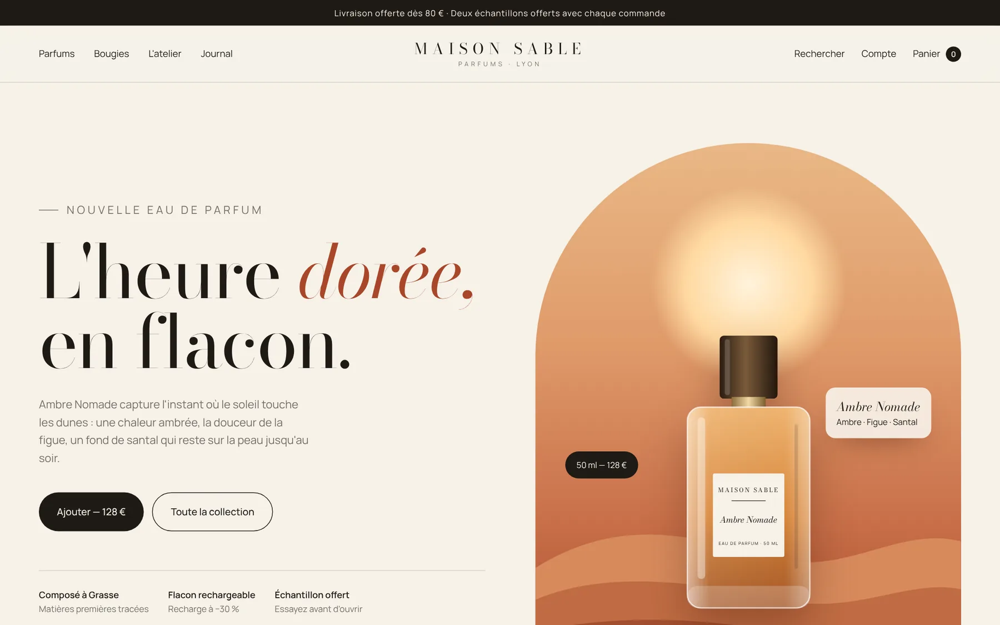
✦ Un projet en tête ?